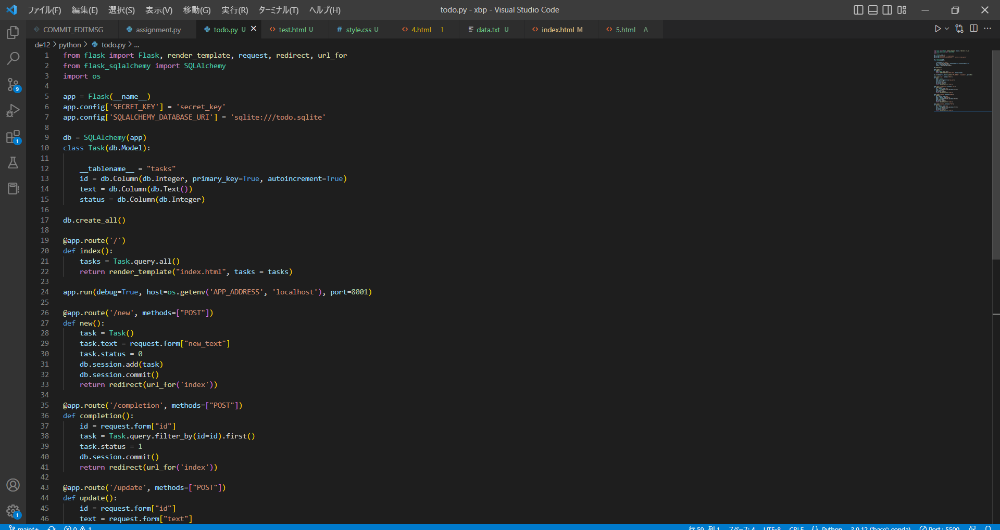

班でスケジュールを予定別にファイルやタブのようなもので分けて管理できたらいいと思った。
そのためスケジュール管理のアプリなどに必要なステップを考えた。
レイアウトを表示
予定を保存・削除する
予定を色分けする
通知する
今回は色分けをする機能について取り組むことにした。
しかし、Todoリストやカレンダーのコードは見つかったが、スケジュール管理のコードが見つからなかった。
何故見つからないのか？
1.スケジュール管理をするにはカレンダーのコードを入れる必要が有り、それによってとても複雑だから
2.スケジュール管理にはもっと自分が思いつかない何かが必要だから
3.そもそもTodoリストやタスク管理で十分で、必要がないから
一応、Todoアプリと書いてあったが、今回取り組む予定の色分けができそうなコードを見つけたので取り組んでみた。
ToDoアプリを作成するプログラム
しかし、難しく、途中で何が起こっているのか（コピー＆ペーストをしていたため）分からなくなってしまい、完成に至らなかった。
途中まで↓

コード（途中まで）
- from flask import Flask, render_template, request, redirect, url_for
- from flask_sqlalchemy import SQLAlchemy
- import os
- app = Flask(__name__)
- app.config['SECRET_KEY'] = 'secret_key'
- app.config['SQLALCHEMY_DATABASE_URI'] = 'sqlite:///todo.sqlite'
- db = SQLAlchemy(app)
- class Task(db.Model):
- __tablename__ = "tasks"
- id = db.Column(db.Integer, primary_key=True, autoincrement=True)
- text = db.Column(db.Text())
- status = db.Column(db.Integer)
- db.create_all()
- @app.route('/')
- def index():
- tasks = Task.query.all()
- return render_template("index.html", tasks = tasks)
- app.run(debug=True, host=os.getenv('APP_ADDRESS', 'localhost'), port=8001)
- @app.route('/new', methods=["POST"])
- def new():
- task = Task()
- task.text = request.form["new_text"]
- task.status = 0
- db.session.add(task)
- db.session.commit()
- return redirect(url_for('index'))
- @app.route('/completion', methods=["POST"])
- def completion():
- id = request.form["id"]
- task = Task.query.filter_by(id=id).first()
- task.status = 1
- db.session.commit()
- return redirect(url_for('index'))
- @app.route('/update', methods=["POST"])
- def update():
- id = request.form["id"]
- text = request.form["text"]
- task = Task.query.filter_by(id=id).first()
- task.text = text
- db.session.commit()
- return redirect(url_for('index'))
- @app.route('/delete', methods=["POST"])
- def delete():
- id = request.form["id"]
- task = Task.query.filter_by(id=id).first()
- db.session.delete(task)
- db.session.commit()
- return redirect(url_for('index'))